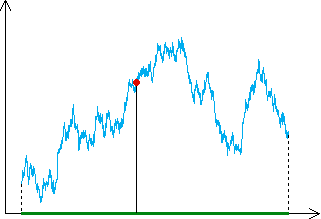
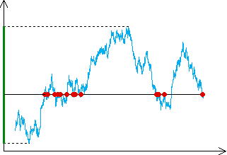

| Here we see a graph of one-dimensional Brownian motion. |
| The term "one-dimensional" refers to the motion's being in one dimension, the y-axis in this case. The graph is a time record of vertical motion of a particle undergoing a random walk on the y-axis. |
|  |
| This graph is known to have dimension |
| It projects to a line segment, of dimension 1. |
| Because it is a graph, any point of the line segment comes from a point of the graph. |
| In terms of dimensions we have 1 + 0 < 3/2, in contrast with the equality in the case of projecting Euclidean objects. |
| Note that the graph projects to a
line segment on the |
|  |
Return to projections.